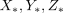
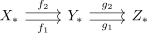
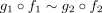
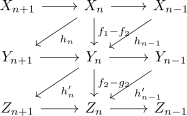
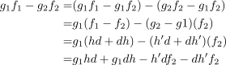
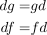
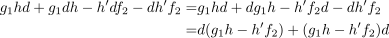
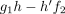

composition of chain homotopic maps
1. Proposition
Let  be an abelian category and
be an abelian category and  be the category of chain complexes.
Suppose
be the category of chain complexes.
Suppose

are chain complexes and
chain homotopic maps.
Then there exists a canonical chain homotopy

2. Proof
By assumption, there exist

Then we get

using the assumption that

Hence

Hence

suffices as homotopy.